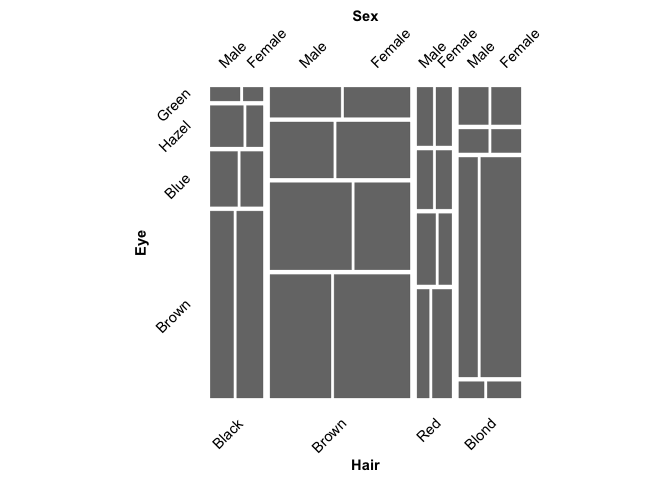
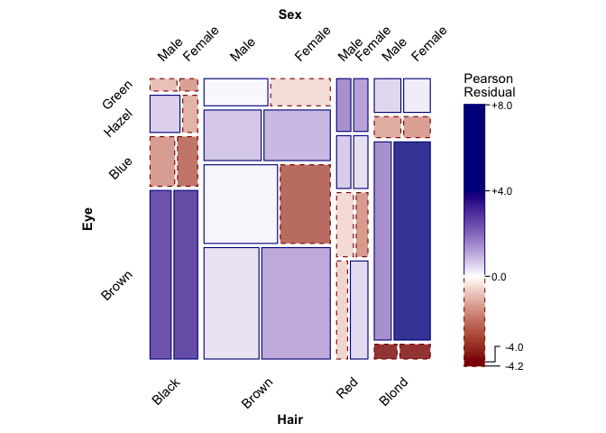
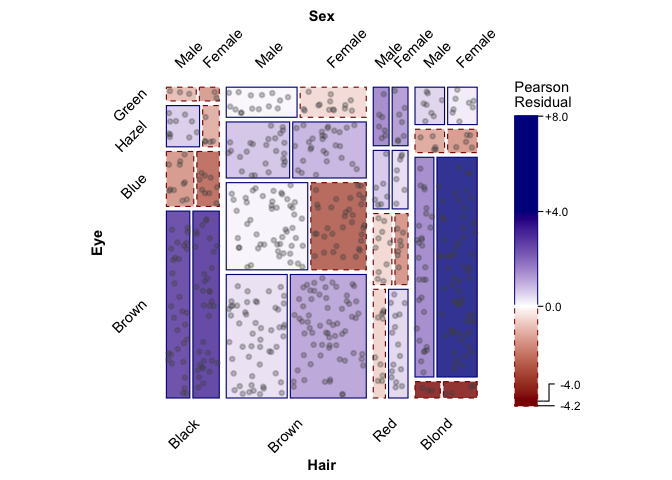

Version 0.5.0, built 2026-08-13
ggmosaic2 is a standalone continuation of the ggmosaic package, which was removed from CRAN around November 2025 and appeared unmaintained (a pull request adding residual-based shading went unanswered). Rather than fork under the original name, ggmosaic2 is developed independently, building on ggmosaic’s original authors (Haley Jeppson, Heike Hofmann, Di Cook; credited as authors in DESCRIPTION). ggmosaic was designed to create visualizations of categorical data and is capable of producing bar charts, stacked bar charts, mosaic plots, and double decker plots.
ggmosaic2 extends this with jittered-point overlays showing individual observations (reflecting non-independence as variation in point density, a physical analog for departures from independence), residual-based shading, and support for fitted loglinear models to show patterns of association among variables in frequency tables. Additional improvements include improved spacing, theme appearance, and proper faceting.
See Friendly (1994, 1999) for the theory of mosaic displays and Jeppson & Hofmann (2023) for the description of the original ggplot2 implementation. Full citations are in References below.
Installation
You can install the latest version of ggmosaic2 from R-universe with:
install.packages("ggmosaic2", repos = "https://friendly.r-universe.dev")or from GitHub with:
# install.packages("devtools")
devtools::install_github("friendly/ggmosaic2")Example
The datasets::HairEyeColor is a classic example of what can be learned from a mosaic plot. It is a 3-way table, containing the frequencies of 592 students who were asked to give their hair color and eye color, classified by Sex.
ftable(Hair ~ Eye + Sex, data=HairEyeColor)
#> Hair Black Brown Red Blond
#> Eye Sex
#> Brown Male 32 53 10 3
#> Female 36 66 16 4
#> Blue Male 11 50 10 30
#> Female 9 34 7 64
#> Hazel Male 10 25 7 5
#> Female 5 29 7 5
#> Green Male 3 15 7 8
#> Female 2 14 7 8To provide some context, the main questions here are:
- Are hair and eye color associated in this sample?
- If so, what is the nature/pattern of association?
- Is this the same for males and females?
Here, we just illustrate how to display this dataset using ggmosaic2. See the vignette, Introducing ggmosaic2: an enhanced ggmosaic for how the current implementation differs from that in the original ggmosaic package, including use of the fill= aesthetic for Marimekko-style shading and the use of spacing of the tiles to preserve a visual hierarchy of the cells belonging to the various factors in the table.
Basic mosaic plot
With default (uniform) shading, a mosaic plot just shows the relative frequencies of each combination of Sex, Eye, and Hair, via the area of each tile. The total frequency is first split by Hair color, then subdivided by Eye color, and finally by Sex.
library(ggmosaic2)
HairEyeColor |>
as.data.frame() |>
ggplot() +
geom_mosaic(aes(x = product(Sex, Eye, Hair), weight = Freq)) +
theme_mosaic(rot_labels = 45)
Data must be in either frequency form (i.e., containing a "Freq" column or equivalent) or case form (i.e., each row contains an individual observation) to be used with geom_mosaic(). Data in frequency form must have its frequency column mapped to the weight= argument of geom_mosaic(). To accommodate the alternate splitting in horizontal and vertical directions, geom_mosaic() uses a product() to specify the geometrical aesthetic of the plot.
See the vignette Three Forms of Frequency Tables for Mosaic Displays for a fuller discussion of case form, frequency form, and table form, and how to convert between them.
Residual-shaded mosaic plot
To see whether hair and eye color are associated, fit a loglinear model of joint independence (expected = "independence") and shade each tile by its residual from that model with scale_fill_residual(). Tiles shaded blue occur more often than expected under independence; tiles shaded red occur less often.
HairEyeColor |>
as.data.frame() |>
ggplot() +
geom_mosaic(aes(x = product(Sex, Eye, Hair), weight = Freq),
expected = "independence") +
scale_fill_residual(limits = c(-4, 4)) +
theme_mosaic(rot_labels = 45)
The expected argument also accepts "saturated" and "conditional" shortcuts, or a custom model formula, for fitting other loglinear models. See the vignette ggmosaic and Loglinear Models for a fuller treatment of model fitting and residual-based shading.
Jittered points: showing individual observations
geom_mosaic_jitter() overlays one jittered point per individual observation on top of a mosaic plot, so that non-independence shows up both as residual shading and as variation in point density within each tile. It needs one row per observation, so first expand HairEyeColor from its frequency-table form using tidyr::uncount().
set.seed(1945)
HairEyeColor |>
as.data.frame() |>
tidyr::uncount(Freq) |>
ggplot() +
geom_mosaic(aes(x = product(Sex, Eye, Hair)), expected = "independence") +
scale_fill_residual(limits = c(-4, 4)) +
geom_mosaic_jitter(aes(x = product(Sex, Eye, Hair)), alpha = 0.3) +
theme_mosaic(rot_labels = 45)
References
Mosaic displays
- Friendly, M. (1994). Mosaic Displays for Multi-Way Contingency Tables. Journal of the American Statistical Association, 89(425), 190–200. doi:10.1080/01621459.1994.10476460
- Friendly, M. (1999). Extending Mosaic Displays: Marginal, Conditional, and Partial Views of Categorical Data. Journal of Computational and Graphical Statistics, 8(3), 373–395. doi:10.1080/10618600.1999.10474820
ggmosaic
- Jeppson, H., & Hofmann, H. (2023). Generalized Mosaic Plots in the ggplot2 Framework. The R Journal, 14(4), 50–78. doi:10.32614/RJ-2023-013